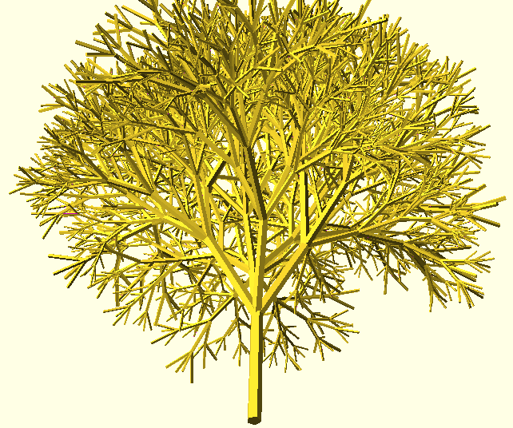
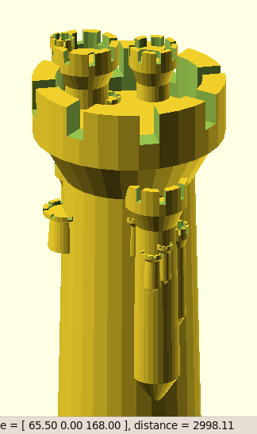
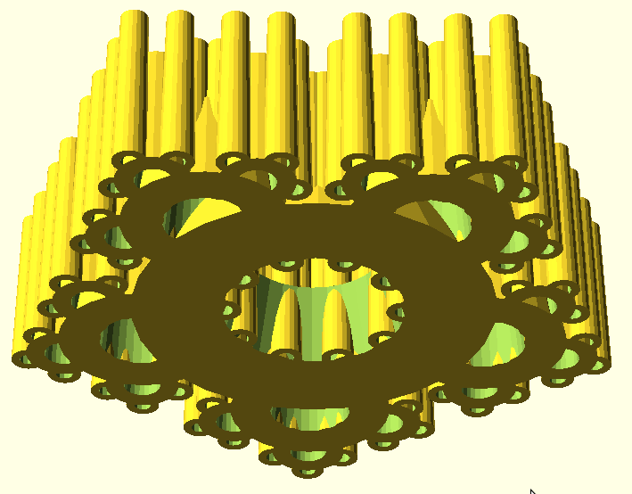
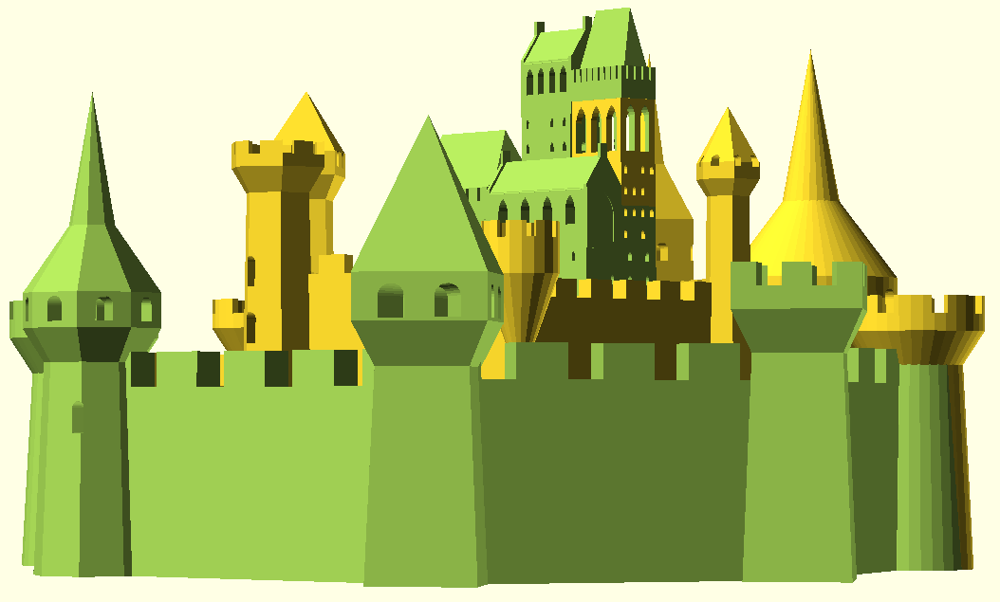

Opencscad is a very tiny little library that helps you produce OpenSCAD programs by writing in C. In this way, you get real variables and recursion, which aren't available in plain OpenSCAD.
You can get opencscad here:
Some examples of what can be done very easily with opencscad:

"Fractal tree" (tree.c, 47 lines of C code.)

"Recursive Rook" (test5.c, 60 lines of C code.)

"Fort Fractal" (test3.c, 32 lines of C code.)

Procedurally generated by a stochastic process:
"Big castle" (castle.c, few hundred lines of C code.)